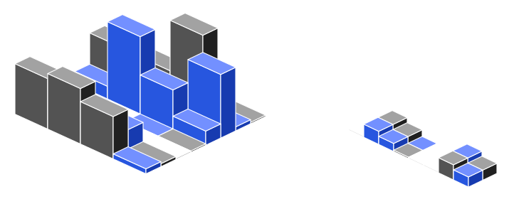

Nazeeh
Abdul-Hadi
Electrical engineering, physics and tools for understanding how things work.

SiliconPilot / classifier weights4 inputs · 8 hidden · 2 scores
Electrical engineering, physics and tools for understanding how things work.
